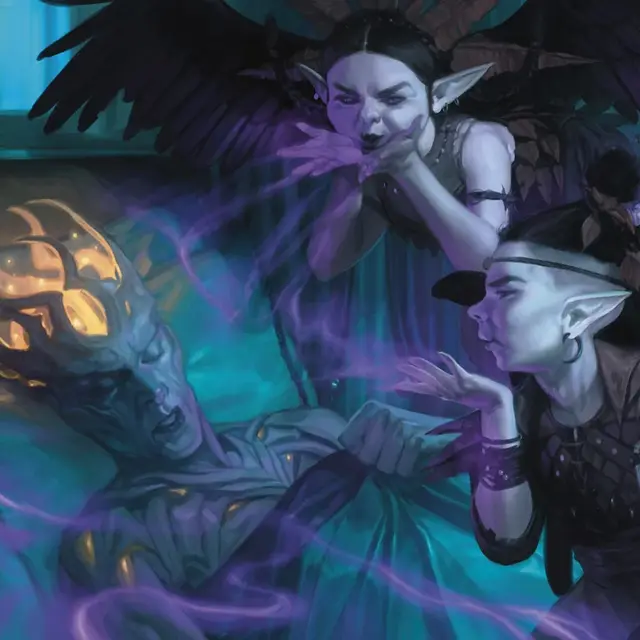

Фея-вредитель
Faerie Pest
Маленькая Фея, нейтрально-злая

Класс Доспеха 12 (кожаный доспех)
Хиты 22 (5к6 + 5)
Скорость 30 футов, летая 30 футов (парит)
| мод | спас | ||
|---|---|---|---|
| СИЛ | 8 | −1 | −1 |
| ЛОВ | 16 | +3 | +3 |
| ТЕЛ | 12 | +1 | +1 |
| мод | спас | ||
|---|---|---|---|
| ИНТ | 10 | +0 | +0 |
| МДР | 12 | +1 | +1 |
| ХАР | 14 | +2 | +2 |
Навыки Восприятие +3, Скрытность +7
Чувства тёмное зрение 60 футов, пассивное Восприятие 13
Языки Общий, Сильван
Опасность 1 (200 опыта)
Бонус мастерства +2
Действия
Клинок-жало. Рукопашная атака оружием: +5 к попаданию, досягаемость 5 фт., одна цель. Попадание: 6 (1к6 + 3) рубящего урона плюс 5 (2к4) урона ядом. Если фея с преимуществом совершает бросок атаки, цель дополнительно получает 3 (1к6) рубящего урона.
Использование заклинаний. Фея может накладывать одно из следующих заклинаний, не требующее материальных компонентов и использующее Харизму в качестве базовой характеристики для заклинания (Сл спасброска заклинания 12):
• 2/день каждое: порча [bane], скольжение [grease];
• 1/день: глухота/слепота [blindness/deafness].
Кража нервов (1/день). Фея испускает взрыв сбивающей с толку магии в 15-футовом конусе. Каждое существо в этой области должно преуспеть в спасброске Интеллекта Сл 12, иначе оно будет испугано феей на 1 минуту. Испуганное существо может повторять спасбросок в конце каждого своего хода, прекращая эффект на себе в случае успеха.
Бонусные действия
Озорная скрытность. Фея совершает действие Засада.
Описание
«Не задерживайся в Туинвале,
Не поддавайся пьянящим ароматам цветов.
Ничего не бери, будь на тропе,
Чтобы феи тебя не искали.»
— Прогулка по диким местам.
Феи-вредители любят причинять раздражение, страх и боль. Они, пожалуй, самые подвижные из фей и рады следовать за каждым, кто обещает им возможность навредить кому-то.
Фею-вредителя можно было принять за человеческого малыша, за исключением крыльев с черными перьями, растущих из плеч фей. Вступая в бой, феи-вредители пользуются магией, манипулирующей мыслями, наряду с острыми лезвиями, покрытыми жалящим ядом.
Феи
Феи Элдраина - это крылатые эльфийские существа, похожие на спрайтов или пикси. Непредсказуемые, ненадежные и аморальные, они скрываются в диких землях и преследуют путников, которых считают нарушителями.
Уфы
Уфы - любопытные существа, встречающиеся в диких землях Элдраина. Хотя их часто считают глупыми, уфы магически связаны с миром природы и знают о тайной жизни деревьев, грибов и мха больше, чем большинство смертных. Хотя уфы и связаны с феями Элдраина, феи относятся к ним как к далеким (и несколько неловким) кузенам. Уфы могут быть представлены с помощью блоков характеристик пикси [pixie] или спрайтов [sprite].